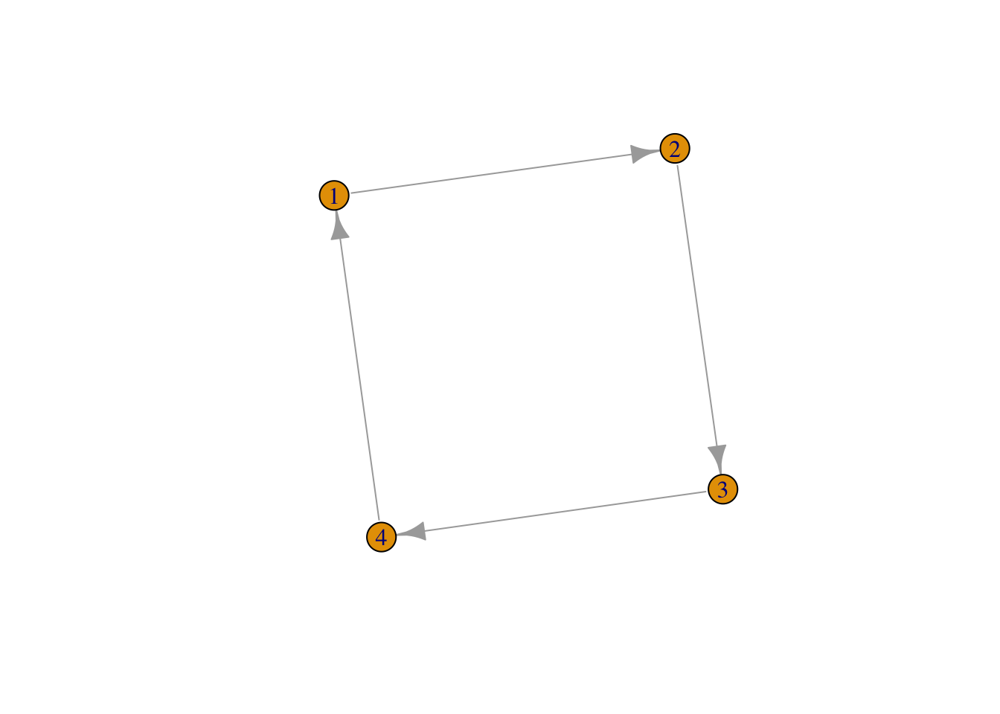

Chapter 5 R Markdown: your life in plain text
library("rmarkdown")
library("knitr")5.1 Why bother with a mark-up language?
R Markdown is a so-called mark-up language. And these are more common than some would believe. For starters, the whole internet is made of mark-up languages, with as best well-know example the html format. Here, we deal with R Markdown which is a variant on the now very popular Markdown language. Originally, John Gruber created the language in 2004 and is extremely simple (hence the name markdown): there is just not that many syntax to learn. One of the most attractive features of markdown is that it can be converted or exported to other formats, most notably pdf (via LaTeX) and html. Therefore, markdown became very popular for writers who wanted to write distraction free. It works more or less similar to the well known writing application Scrivener (which can actually import and export Markdown). Other types of applications are blogging with Wordpress and the online (nerd) repository GitHub (btw, all resources for this book can be found on Github; of course in markdown).
Building on Markdown, the people of RStudio added some additional features, most notably including the possibility of adding equations and literature programming (writing text/documentation and code together). They bundled this in a package called RMarkdown, although it actually still is Markdown with some additional flavour. The nice thing about this is that it works (well, should work) directly out of the box. So, clicking on File > New File > R Markdown already gives an example file that enables you to create a webpage or Word document.
5.2 So, how does it work?
I first explain the basics of Rmarkdown, then the working of the frontmatter (the “YAML”) and finally how to insert equations. Note that I keep to the basics here; for a good overview, see RStudio’s cheatsheet.
5.2.1 Basics
With a mark-up language, there is some code or tags around text. Fortunately, with Markdown this is rather easy.
5.2.1.1 Headers
To structure a text, headers are indispensable. Headers are denoted with a hashtag (#), where the number of #’s indicated the level of the header. So:
# Header 1
## (Sub-)header 2
## (Subsub-) header 35.2.1.2 Bold, italics, and verbatim text
Making text bold or verbatim (the latter is like code font) is rather straightforward and works as follows:
*Italics*; **bold** and `verbatim` looks as Italics; bold and verbatim.
5.2.1.3 Lists
Unorded lists are very simple (as long as the indentation is correct; four space are needed), so
* unordered list
+ sub-item 1
+ sub-item 2
- sub-sub-item 1 yields:
- unordered list
- sub-item 1
- sub-item 2
- sub-sub-item 1
Orded lists work likewise:
1. ordered list
2. item 2
i. sub-item 1
a. sub-sub-item 1 yields:
- ordered list
- item 2
- sub-item 1
- sub-sub-item 1
- sub-item 1
5.2.1.4 Links and the like
Finally, links (to whatever) are inserted as with first square brackets and then parentheses, so:
[http://thomasdegraaff.nl/ResearchTools](ResearchTools)yields: http://thomasdegraaff.nl/ResearchTools
Inserting images works likewise, but then with a exclamation mark in front, then a caption in square brackets and then a path to where the image can be found, so:
displaus the Network.png picture as follows:
Social networks with R
5.2.2 The YAML
YAML stands for Yet Another Meta Language and is to be regarded as meta-data. It says something how your contents should look like and typically instructions come in key-value pairs. As an example title: "Tutorial 1" denotes that the title of the document is “Tutorial 1”. There are some other variables, but typically they are filled in by RStudio itself. YAML always come between --- chunks at the beginning of your document, so a full example would be:
---
title: "Tutorial 1"
author: "Thomas de Graaff"
---The most important thing to remember here is that this frontmatter, the YAML, says something about the content but is not part of the content itself.
5.2.3 Equations
It is relatively straightforward to insert equations into a document, using LaTeX like syntax, which is remarkably similar as what you would do in Excel. In-line equations are denoted with a single pair of dollar signs. Stand alone equations with double pairs of dollar signs. So
While Einstein might favor $E = mc^2$, the formula that would do it for me would be:
$$ Q^\ast = \sqrt{\frac{sDK}{h}}$$yields:
While Einstein might favor \(E = mc^2\), the formula that would do it for me would be: \[ Q^\ast = \sqrt{\frac{sDK}{h}}\]
The formulas are automatically parsed to a html like object through an integrated built-in Javascript program called MathJax. See for some background material concerning LaTeX equations this Wikibook.
5.3 Literate programming
Literate programming is a concept initially coined by the very distinguished computer scientist Donald Knuth (the same guy who wrote one the most (in)famous mark-up languages of them all—LaTeX). Literate programming basically means that code and text (documentation) are written together, which is wonderful for, e.g., reproducible research. With one command both text (say your paper) and the analysis are generated.
Whether literate programming is always a good idea for a larger project is debatable. Some people argue to keep code and text (documentation) separated. However, for educational and smaller scientific purposes, such as theses, papers and tutorials, it can be a great tool. Fortunately, R studio and RMarkdown provide a great and relatively straightforward way to engage in literate programming with the use of the package knitr (see as well this website).
knitr is very powerful, but for now I just give the basics. Say, one invokes the car dataset and would like to perform a regression and a scatterplot, then the following might do this trick:
```{r}
data("cars") # Use built in dataset
summary(cars)
plot(cars$speed, cars$dist)
summary(lm(dist~speed, data = cars))
```
Which renders:
data("cars") # Use built in dataset
summary(cars)## speed dist
## Min. : 4.0 Min. : 2.00
## 1st Qu.:12.0 1st Qu.: 26.00
## Median :15.0 Median : 36.00
## Mean :15.4 Mean : 42.98
## 3rd Qu.:19.0 3rd Qu.: 56.00
## Max. :25.0 Max. :120.00plot(cars$speed, cars$dist)
summary(lm(dist~speed, data = cars))##
## Call:
## lm(formula = dist ~ speed, data = cars)
##
## Residuals:
## Min 1Q Median 3Q Max
## -29.069 -9.525 -2.272 9.215 43.201
##
## Coefficients:
## Estimate Std. Error t value Pr(>|t|)
## (Intercept) -17.5791 6.7584 -2.601 0.0123 *
## speed 3.9324 0.4155 9.464 1.49e-12 ***
## ---
## Signif. codes: 0 '***' 0.001 '**' 0.01 '*' 0.05 '.' 0.1 ' ' 1
##
## Residual standard error: 15.38 on 48 degrees of freedom
## Multiple R-squared: 0.6511, Adjusted R-squared: 0.6438
## F-statistic: 89.57 on 1 and 48 DF, p-value: 1.49e-12knitr can deal with various options, so as to hide the results or the code. Even different programming languages such as Python or Bash can be indicated as for proper syntax highlighting. For inline code one use backticks and the indicate r, such as around r 1+2, which renders in 3.
5.4 Exporting (“knitting”) to html, pdf or Word
Perhaps the biggest advantage of using (R) Markdown is that it is all just plain text. And as such, it can be easily exported to other (prettier) formats, such as html or pdf. RMarkdown documents can actually be exported to Word documents, although that is typically less pretty. If you would like to convert to pdf then you need a LaTeX engine installed on your computer. And that is quite a hefty download. However, on the plus side, just download and install it and under the hood of RStudio all the magic happens. So, you can have nice and pretty LaTeX document without actually touching upon LaTeX mark-up code (which, believe me, is not that pretty).
5.4.1 Exporting to presentations
There are kinds of other benefits to using RMarkdown, but a big one is that it is pretty easy to make presentation slides (using File > New File > R Markdown > Presentation). So you can create a fancy html presentation with proper equations, code with syntax highlighting and figures (or statistical output if really wanted).
Better, when LaTeX is installed you can create a LaTeX (beamer) presentation on the fly and looking all nerdy with it! And in the output options you can easily indicate the theme and colorscheme (e.g., my lecture slides use the Darmstadt-beaver combination).
5.5 As conclusion some final remarks
My aim is not that everyone should use this tool to create documents, presentations or blog posts. This is not the “best” tool for everyone (heck, there is not even a “best” tool). And for some of you this feels too cumbersome, nerdy, or outright dreary. However, I would like to present you this as an alternative to the Microsoft Office universe. As Word or Powerpoint definitely have advantages (everyone uses it), they also have some disadvantages. First of all, equations and source code are sometimes cumbersome to implement, converting to blogposts could be nightmarish, and immediately incorporating statistical output in the form of tables is not possible.
Well, you never know. Some of you actually might find this useful.